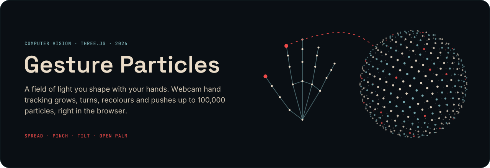
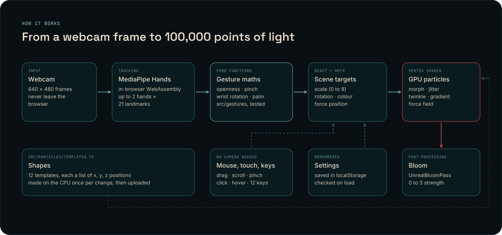

Gesture Particles
Computer vision and 3D, 2026
Move your hands
Reshape the scene
A WebGL-capable browser is needed, and a webcam for gestures. Without one, the mouse, touch, and keyboard control everything.

The idea
The hand becomes
the interface
A browser particle system you shape with your hands. Webcam hand tracking scales, turns, recolors, and pushes up to 100,000 glowing particles.
Gesture Particles connects webcam hand tracking to a three-dimensional particle system. Rather than relying only on sliders, it lets a physical gesture change the composition. Twelve shapes that morph into each other, gradient palettes, and bloom give another way to explore, and the mouse, touch, and keyboard work without a camera.

Explore the experience
A few gestures
Room to play
- Get started
- Choose Start camera, allow webcam access, and keep your hands clearly in frame.
- Right hand
- Spread or pinch your fingers to change the particle scale.
- Left hand
- Tilt your wrist to rotate; pinch to cycle colors.
- Open palm
- With the force field on, push particles aside.
- Control panel
- Explore twelve shapes that morph into each other, gradient palettes, density up to 100,000 particles, and bloom.
- No webcam
- Drag to turn, scroll to scale, click to change color; press ? for every shortcut.
Step inside